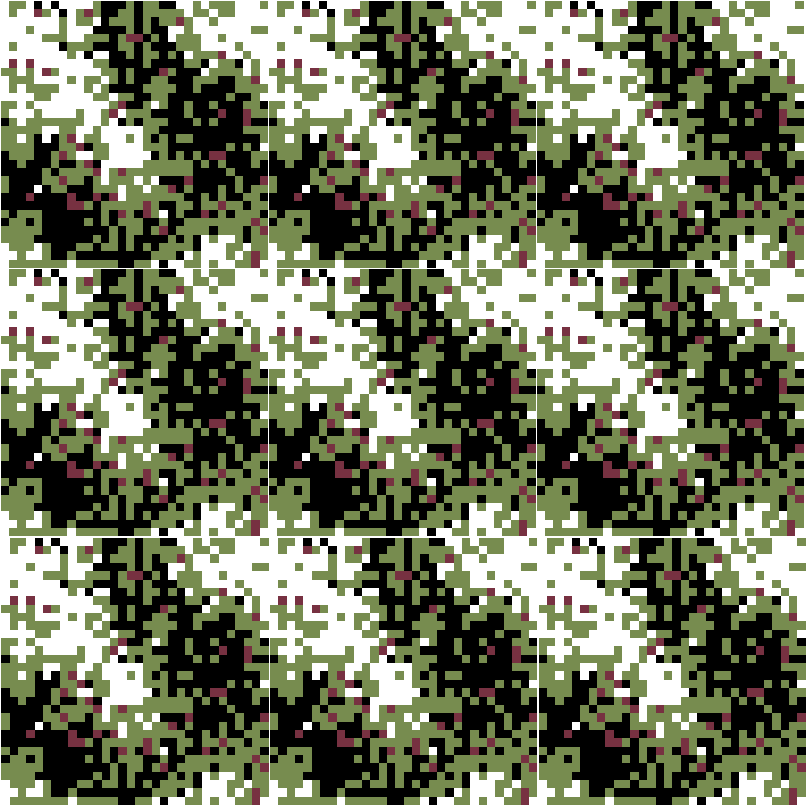
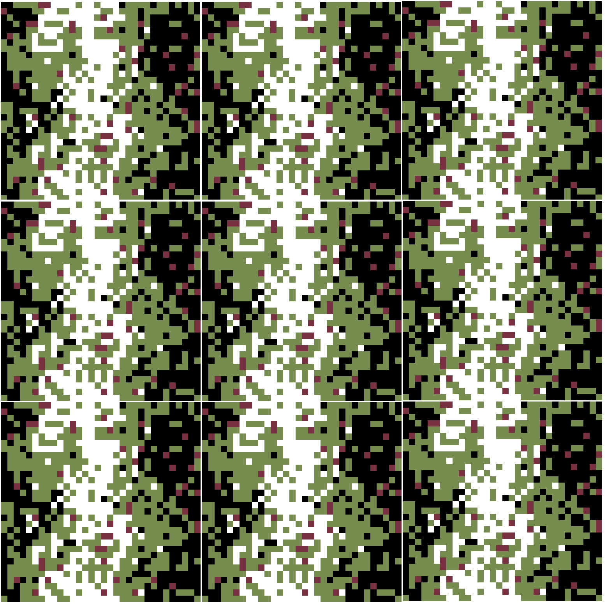
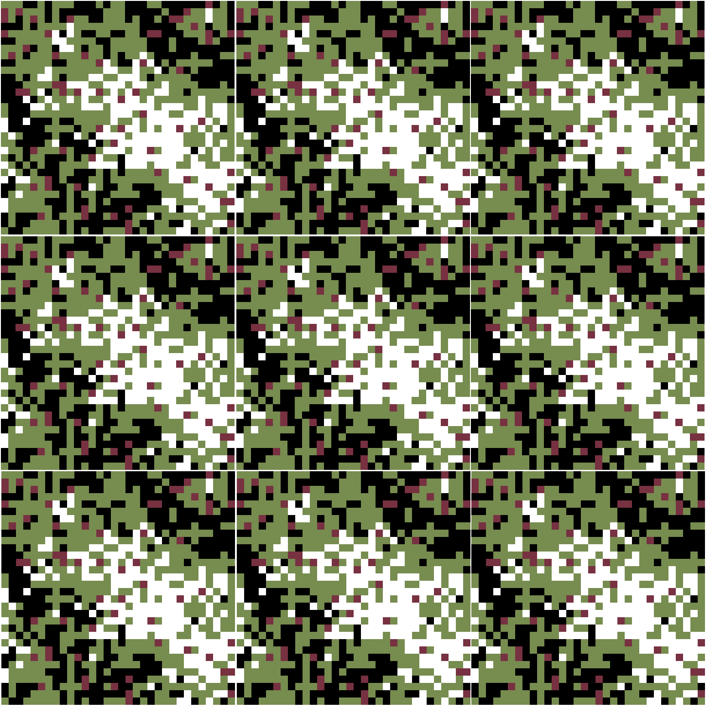
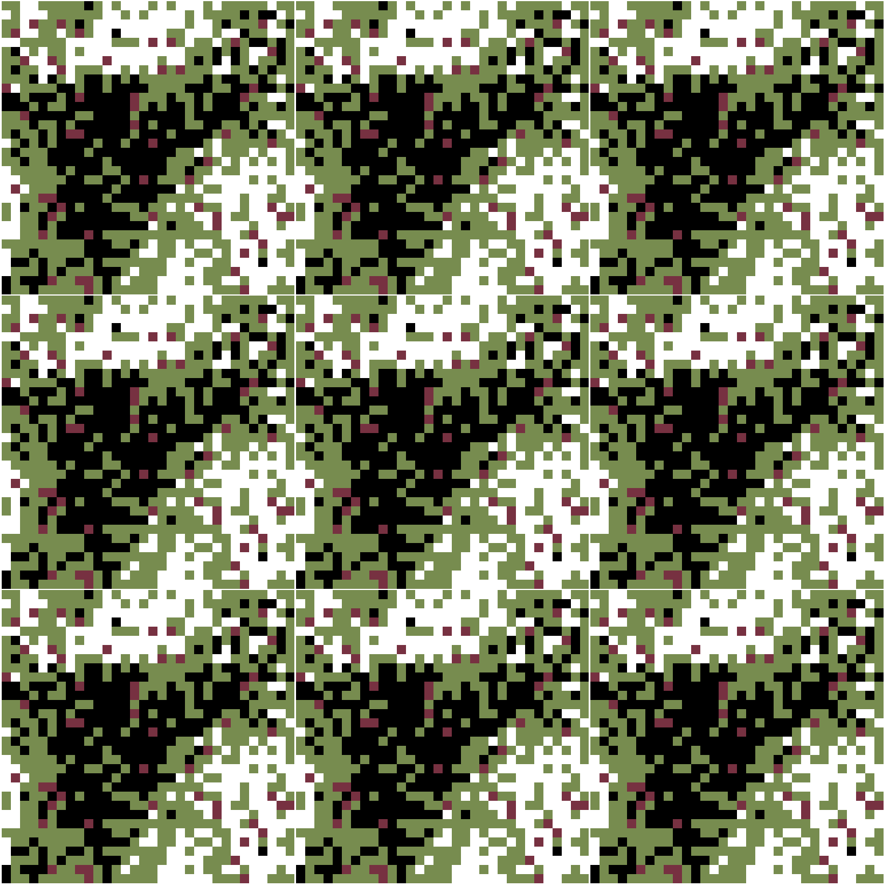
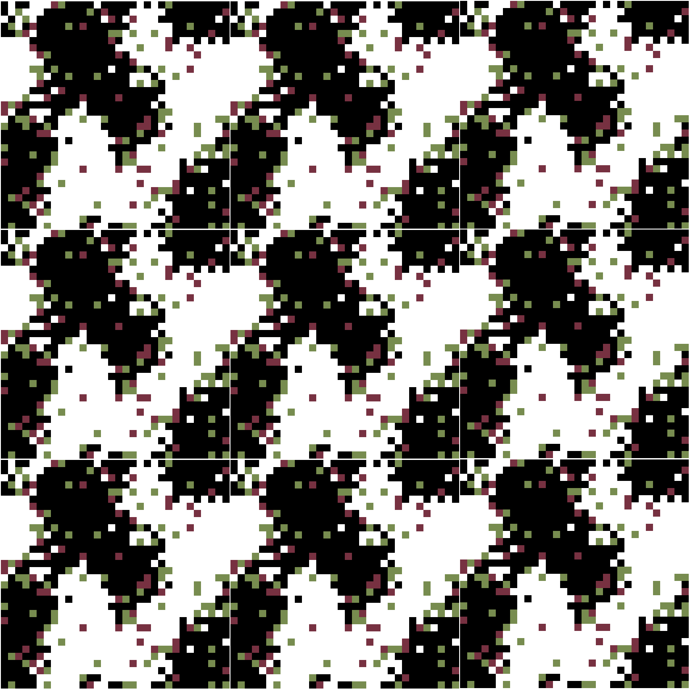
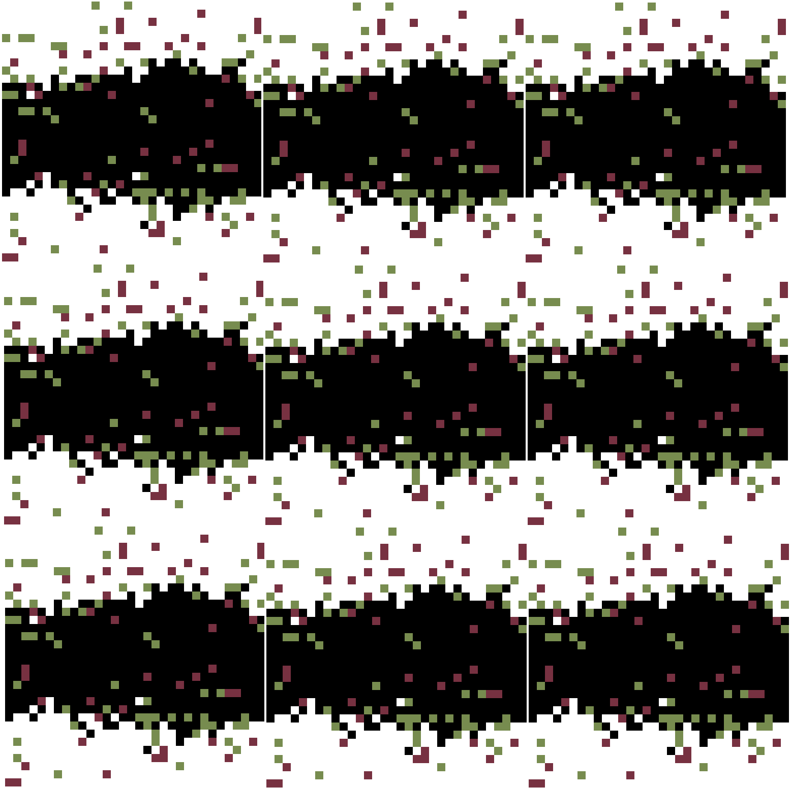

Výsledek po cca 70 000 krocích (dáno 9x vedle sebe aby vynikly důsledky toroidnosti). (5%, 25%, 25%, 45%)
Pokus 2, 310 000 kroků:
Pokus 3, 40 000 kroků:
Pokus 4, 60 000 kroků:
Pokus 5, 20 000 (5, 45, 45, 0):
Pokus 6, 730 000 (5%, 47.5%, 47.5%, 0%):
Genetické programování (GP) je technika umělé inteligence spadající do širší kategorie evolučních algoritmů - metaheuristických optimalizačních algoritmů inspirovaných přirozeným výběrem probíhajícím v přírodě. GP se pro zadaný problém snaží nalézt počítačový program (přesněji jeho syntaktický strom) schopný tento problém vyřešit. Tato technika byla navržena Johnem Kozou [KOZA1]. Ukazuje se, že se jedná o velmi úspěšnou techniku v řadě oblastí, její úspěšnost se navíc dále podstatně zvyšuje s přibývající výpočetní silou kterou lze navíc dobře paralelizovat [KOZA4]. GP pracuje s populací jedinců (programů řešících daný problém), na začátku vygenerovanou pomocí generujícího algoritmu. Každá další generace je z předchozí vytvořena na základě selekce (založené na kvalitě řešení) a genetických operátorů (nejčastěji křížení a mutace). Další sympatickou vlastností GP je jeho snadná hybridizace s jinými optimalizačními algoritmy; ty lze chápat jako konkrétní algoritmus generování, případně jako genetické operátry. Na druhou stranu je standardní GP jednoduše popsatelný algoritmus, což je výhoda pro jeho další zobecňování. GP sestavuje jedince (program) z dvou množin stavebních symbolu; z množiny funkčních symbolů F a množiny terminálů T. Ve standardním GP je vyžadována tzv. closure podmínka nad těmito množinami, tzn. že všechny funkce z F musí přijímat všechny prvky T jako své argumenty a vracet jen výstupní hodnoty akceptovatelné jako argumenty všemi funkcemi z F. Toto můžeme shrnout tvrzením, že všechny stavební symboly musejí být nad jediným typem. Pokud toto omezení odstraníme, dostáváme genetické programování nad typovaným jazykem.
Tímto rozšířením GP se zabívalo již několik prací [CITACE]. Z jiného úhlu pohledu můžeme zavedení typů do GP naopak chápat jako zavedení omezení na jednotlivé stavební symboly, tedy na způsob jakým mohou být tyto symboly navzájem skládány. Typy tak efektivně zmenšují prohledávaný prostor programů, množina stavebních symbolů tak může být podstatně větší a rozmanitější. Odstranění closure podmínky umožňuje použití přirozenějších funkcí a terminálů používaných v člověkem psaných programech na rozdíl od netypovaného GP, kde je tato množina pečlivě navržena přesně na míru danému programu. Jak ukazuje praxe z funkcionálních jazyků, konstrukcí polymorfních higher-order funkcí můžeme pohodlně tvořit konstrukty odpovídající prvkům, které jsou standardně pevnou součástí jazyka (podmínky, cykly, atd.) ale i obecnější matematické konstrukty uchopující pojem výpočtu jako jsou monady či arrows [Hug00?? nevim esli citovat - to je obecny o šipkacha monadach].
Pro reprezentaci typovaného programovacího jazyka může být použit lambda kalkulus, který se standardně využívá při studiu typových systémů. Můžeme ho navíc považovat za zobecnění S-výrazů (přidáním anonymních funkcí) používaných ve standardním GP. Je to jazyk velice kompaktní a pro porgramování přirozený, v zásadě má tři konstrukty (proměnná/konstanta, aplikace funkce, anonymní funkce), přes svou jednoduchost je lambda kalkul ve své netypované verzi turingovsky kompletní. Naproti tomu např. programy v symply typed lambda kalkulu mají garantováno, že vždy zastaví. Díky Curry-Howardově korespondeci se navíc lambda kalkulus používá jako prostředek pro formální uchopení pojmu důkazu (typ odpovídá logickému tvrzení, lambda term důkazu tohoto tvrzení), z čehož je patrné, že problém generování lambda termů daného typu a automatické dokazování logických tvrzení jsou velmi příbuzné problémy. Lambda kalkulus a s ním spojené typové systémy jsou podrobně sudovány v [POSLEDNí-BARENDRECHT], kde je mimojiné diskutována metoda pro generování lambda termů (v normální formě) pro daný typ.
Cílem projektu je navrhnout systém efektivního začlenění typů do GP spolu s vhodnými genetickými operátory a programy generujícími algoritmy. Dále pak podrobněji prozkoumat důsledky, které takový systém má na možnosti volby množiny stavebních symbolů pro různé problémy.
Nalezení typového systému vhodné síly není triviální problém. Pro lepší ilustraci tohoto problému je užitečné představit si spektrum systémů řešících problémy v závyslosti na síle typového systému, nad kterým takový systém pracuje. Na jednom konci takového spektra leží standardní netypované GP; zde je vygenerování jedince triviální operací a práce takového systému tkví v kombinování těchto nedokonalých řešení do čím dál lepších pomocí selekce a genetických operátorů. Takový přístup můžeme označit za induktivní; začíná s konkrétními "pozorováními" (množina náhodných jedinců a jejich kvalita) a pokračuje k širším zobecněním (výsledný (sub)optimální jedinec). Na druhém konci spektra leží metody automatického dokazování vět (a s ním příbuzné metody jako je formální verifikace atd.); zde naproti tomu jde o vygenerování libovolného důkazu (jedince) vstupního tvrzení (požadovaného typu) a o další kombinování několika takových důkazů za účelem zdokonalení nám typicky nejde. Takový přístup můžeme označit za deduktivní; začíná z teorie (množina stavebních symbolů s přiřazenými typy) a zadaného tvrzení k dokázaní (typ jedince) a snažíme se dostat k libovolnému důkazu tohoto tvrzení (program daného typu). Typované genetické programování můžeme chápat jako systém někde uprostřed tohoto spektra, vyvažující a využívající oba přístupy - induktivní i deduktivní. Volba typového systému proto musí být rozvážná, pokud bychom totiž zvolili příliš silný typový systém, bude problém nalézt vůbec jediného jedince, natož celou různorodou populaci. S mocnějším typovým systémem také přichází možnost zakódovat do něj netriviální vlastnosti, které chceme aby vygenerovaný jedinec splňoval. Evoluce pak tyto jedince splňující dané vlastnosti dále zdokonaluje. Při volbě genetických operátorů, které zachovávají správné otypování, je zajištěno, že evoluce tyto požadované vlastnosti neporuší. Splňování určitých vyžadovaných vlastností jedince je v oblasti evolučních algoritmů často se vyskytující téma, typové systémy umožnují toto téma uchupit systematickým a formálně vyzrálým způsobem kompatibilním s formálními metodami matematické logiky.
V každém evolučním algoritmu je důležitou fází návrh genetických operátorů, v typovaném GP nad lambda kalkulem je to otevřený problém. V tomto ohledu budeme klást hlavní důraz na algoritmus generování jedinců, kterýžto lze přímočaře využít při standardní podobě operátoru mutace. Dále bude při návrhu genetických operací prozkoumána aplikovatelnost teoretických konstruktů z oblasti lambda kalkulu (různé redukce, eliminace abstrakcí, atd.). Budou zkoumany formy "chytrých" genetických operátorů využívající znalost daného problému, díky tomu bude umožněna spolupráce s dalšími optimalizačními metodami jakou je například Ant colony optimisation (ACO).
ZBYLé POZNAMKY: --------------- typy odstranej nutnost problemove zavysle definice "stavebnich bloku" - ve std gp je tuf specificky "vykrafteny" na miru danymu problemu, - typovany gp umoznuje pouzit stejnou sadu pro vice problemu. tim ze Typy pak efektivne redukujou velikost prohl prostoru je realny pouzit i velky sady ktery by jinak nebylo mozno v std gp pouzit. - zlaty gral by pak bylo mit jednu sadu univerzalni pro vsechny problemy . Pak by se redukovalo jeste vic [ ten termin co pouziva koza ve 4ce pro to co se musi vykraftit clovekem aby... jakoby human supplied knowledge] meta - zkusit sloučit s implementací - opt metody maj mnoho prichuti ale uvnitr se opakuji ta sama temata, ty de podchytit zas nakou "knihovnou fci" a tyto metody pak muzem slechtit jako by se nechumelilo - zacnem od jednoduchosti jako nastaveni gp algoritmu jehoz soucasti je ale i strat kera je program a tu teda muzem slechtit. Nakonec se muzem dostat az ke slechteni samotnejch opt metod - otazkou je jak efektivne slechtit tydle meta veci, nsbizi se napr oddeleny subpipulace bezici rizeny temi slechtenymi parametry implementace a odzkoušení, publikace … inspirovat se martinovou formulací
přesunuto sem: --------------- - jedno takovy rozsireni do deduktivnosti je pridani predikatovejch symbolu v podobe typovejch trid. To nam umozni efektivne popsat struktury od listu pevne delky, pres neuronove site pres monady atd linearni gp atd. do řešení - zde se bude navazovat na praci z diplomky, kde se podarilo formulovat generovani takovym zpusobem ze je param (todle se spis hodi do zpusob reseni) atd... - inhabitation tree, inhabitation machine, inhabitation paths. Roadmaps - meZiproblemove interakce - krizeni napric problemy , module acvision v globalni mape kombinatoru - tohle spolecne s roadmapama pak tvori knowlidge base pro programovani "vyslovena" v jazyce logiky odpovidajici tomu typovimu systemu -------------------------------------------------------- (nejtechnictejsi cast formulare) (neni to jen výčet metod, ale mělo by to jít chronologicky) (mělo by to adresovat cíle) metody: odstavec o GP, krátkej, rychle jít na l. kalkuly věci kolem prohledávání typový systemy -- ty druhy ACO Chronologie - zkopírovat shora a utřídit dle cílů -operatory: Vyzkouset krizeni s expanzi do ski vzdy pri skrizeni a nasledne to zase normalizovat - bojovat tim proti bloatu -operatory: vyzkouset ACO na generovani jedincu a mutace - specialni aco se trema presnostma roadmap ( tree,machine,paths) - meta: vyzkouset zdokonalit strategii z diplomky pomoci systemu samotneho - posileni deduktivnosti: polymorfni typy - meta: rizeni sady ruznorodych ridicich parametru jako subpopulaci, krizeni subpopulaci skrizenim jejich ridicich parametru a slitim jejich populaci. - posileni deduktivnosti: skusit napasovat na typovej system logicky programovani v typovejch tridach, pomoci toho skusit nasimulovat klasickou GAs pres seznamy pevny dylky krs typ pro cisla, dal nervovy site krs nasobeni scitani prenos fun a sipky a permutace zavorek (rotace na stromech) a polymorfni kartezsky souciny - bigcontext - vytvoreni sady problemu se stejnym kontexem v tuhle dobu uz bych mel mit z predchozich veci dostatek problemu na slucovani -operatory: zrychlit generovani pomoci chytrejsi heuristiky v A* pro presny odhad vzdalenosti do nejblizsiho kompletniho termu z danyho unfin termu pres identifikaci unfin termu s tim samim "gama s pruhem"
Souč Stav Pozn : ZBYLé POZNAMKY -------------------------------- - Kde zmínit citace na konkurenci a čim se od nich odlišujem? - konkurenci asi zmínit zde - odlišnosti ve způsobu řešení - jetě si projít starý slajdy co sem dělal na štěpánka tam mám další propagandu (ale záměrně na to kouknout až pak abych měl víc formulací a nebyl ovlivněnej tim starym) - možná ještě kouknout na propagandu o typovanym v článkach - yu a kanadani a kombinatoři - ADF vs trivialní fce explicitní aplikace - LK : virtualní stroj popsatelný jedním řádkem (beta-redukce)
V hlave ma hlasu par Je to zhouba? nebo dar? V hlave ma hlasu par Je to zhouba? nebo dar? Z mesta byl vyhnan v dal osudu napospas Kdysi se tem zrudam smal A ted s nima zdili kompas V hlave ma hlasu par Je to zhouba? nebo dar? V hlave ma hlasu par Je to zhouba? nebo dar? Ve snu-se divny dedci mihaj Jejich ksichty uz mu splivaj Byl to vagus? nebo dabel? a ten kus masa co se tam valel v hube divna pachut kovu Ted boji se usnout znovu Dedci splivaj, je jich mnoho Je jen jeden? A co z toho? V hlave ma hlasu par Neni to zhouba, je to dar V hlave ma hlasu par Neni to zhouba, je to darposlechnout nástřel (lame)
{
"name" : "Chuan",
"age" : 10,
"foo" : { "_" : "function (x){return x+1;}" }
}
Který by se ale přeložil pomocí "JSON_.parse"
na objekt:
{
name : 'Chuan',
age : 10,
foo : function(x){return x+1;}
}
Podstatná vlastnost objektu který má být korektně převeden do JSONu_, že by neměl nic schovávat do closure, aby jednoduché .toString() aplikované na funkci nestratilo o funkci žádnou inforaci.
A samozřejmě closure neni jediná potíž, další potíž je, kde to vezme context ve kterém bude interpretovat konstanty obecně (jména funkcí, konstant,..). Přímočarý a pravděpodobně né moc dobrý je globální scope. Bude moct referencovat svoje položky? Jaká bude politika vůči this?
Je otázka, zda se spokojit s esteticky pěkným ale nebezpečným "_". V zásadě však to myslím není problém použít, protože by němělo být vždy jasné, že daný JSON je vlastně JSON_. Případný atribut s klíčem "_" může být zakódován jako "__" atd. nebo prostě bude zakázán. Zdá se mi to lepší, než používat nějaké "__FUN__" apod.
Zdá se, že se zákazem closure je docela netriviální potíž, protože to vylučuje použít funkci vrácenou funkcí v objektu, který pak chceme serializovat. Např:
foo = function(x){return function(y){return x(y);}}
bar = foo(Math.sin)
bar.toString()
===> "function (y){return x(y);}"
a né "function (y){return Math.sin(y);}"
Věc co mě napadla a nevim do jaký míry je rylejtlá k tomuhle je to, že jde celkem
elegantně psát lambda termy přímo v jsonu:
\x y.x y
{'x':{'y':['x','y']}}
případně
{'x y':['x','y']}
možná i dokonce (ale to už trochu strácí tu jednoduchou parzovatelnost)
{'x y':'x y'}
tzn něco jako
{_:{'x':{'y':['x','y']}}}
místo
{_:"function(x){return function(y){return x(y);}}"}
ten seznam tam má hezkou vlastnost že
\ f g x. f x (g x)
jde jako
{f:{g:{x:[f,x,[g,x]]}}}
(případně)
{'f g x':[f,x,[g,x]]}
Nevim jestli je to k něčemu dobrý, vypadá to ale že bude třeba ručně řešit
některý takový věci, pokud se nebudeme chtít ochudit o možnost funkcí co vracej funkce
a takováhle notace neni až taková pain-in-the-ass a je jednodušejc parsovatelná
než plaintext.
Rozhodně se mi zdá, že dynamický jazyky jsou asi o něco vhodnější na dělání prototypů. Kdy člověk ještě nemusí mít v hlavě moc představu o datovejch strukturách který je vhjodný použít a ty se až "vyloupávaj" za běhu. Ve chvíli kdy se to vyloupne, tak může mít smisl to ukotvit, přepsat v tyxpovanym jazyce - pokud vypadá že by to mohlo přinýst zlepšení - zrychlení, zpřehlednění, zbezpečnění..
Na druhou stranu jsou zase věci co si člověk bez typů neužije, protože neni drženej tim zábradlíčkem
a nemůže si dovolit některý úlety. No je to na hlubší zamyšlení, ale aspoň něco.